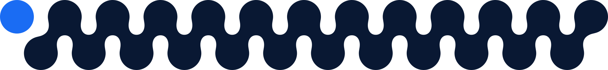
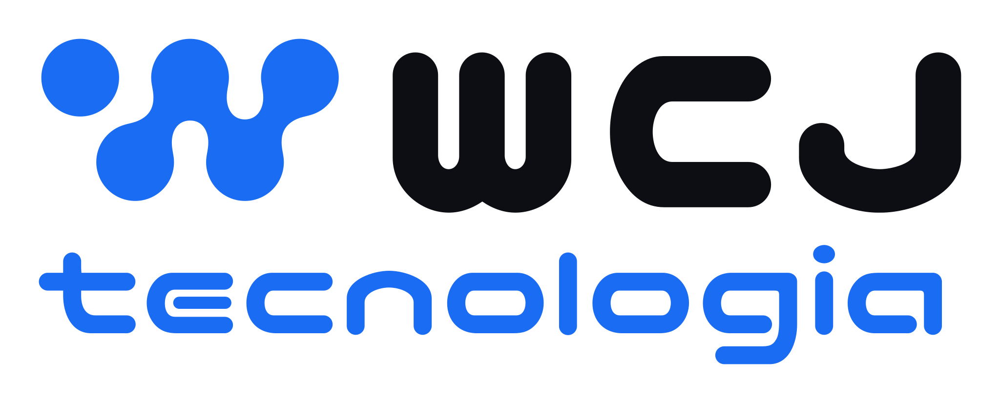
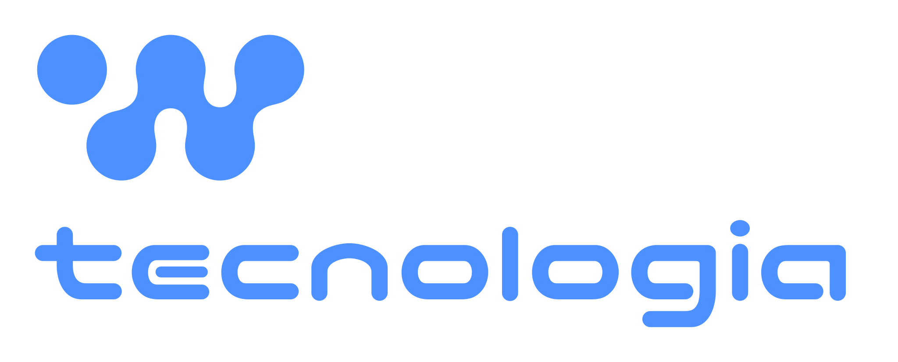
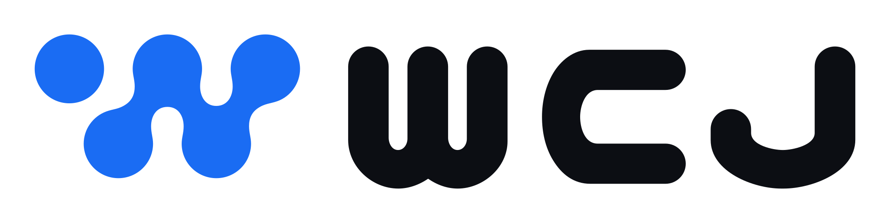
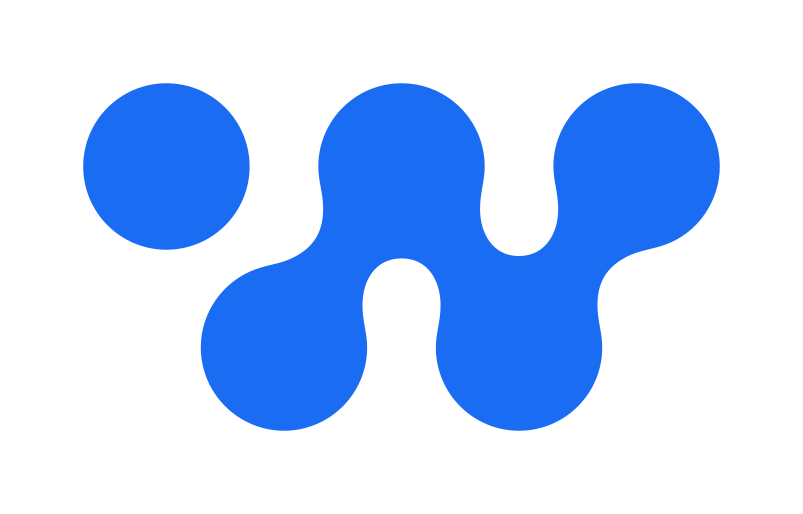
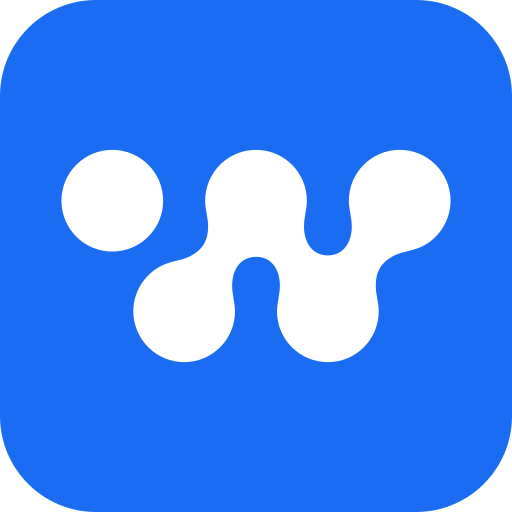
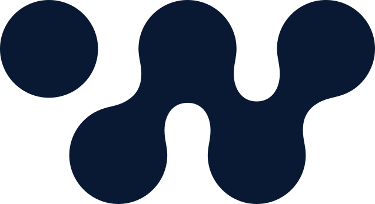

Sistema visual da WCJ — sala de controle limpa. Preto e branco dominam, o azul elétrico é acento afiado, o padrão de nós assina as peças de marca.
O logo é vetor e usa as cores do sistema. Os arquivos ficam em marca/logo e todos saem do mesmo desenho.






O raio de um nó em toda a volta. Nada de texto, imagem ou borda dentro dela. Os arquivos já trazem essa margem.
Os neutros sustentam a página; o azul entra onde há decisão (CTA, dado, oferta). O alerta é exceção rara.
O mínimo para texto pequeno é 4,5:1. Estas cinco regras garantem isso.
Uma escala só para severidade e situação, no app e nos relatórios. Verde, âmbar e laranja aparecem em dado e em tela de produto, nunca como cor de marca em peça de divulgação.
| Estado | Texto no claro | Selo no claro | No escuro |
|---|---|---|---|
| Crítico | #D12B15 | Crítico #FCEDEB | Crítico #FF5A45 · #301612 |
| Alto | #B6500C | Alto #FCF2EB | Alto #FB8537 · #301E12 |
| Médio | #986706 | Médio #FCF6EB | Médio #F6B128 · #302612 |
| Bom | #1C8051 | Bom #ECFBF4 | Bom #30CF85 · #123022 |
Treze tons frios, cada um com um papel. Borda sobre fundo escuro: #232A38.
| Tom | Cor | Papel |
|---|---|---|
| 0 | #FFFFFF | Superfície: cartão, página de documento |
| 50 | #F5F7FB | Fundo de página claro |
| 100 | #EBEFF7 | Faixa alternada e zebra de tabela |
| 200 | #DDE3EC | Borda e régua |
| 300 | #C9D0DE | Borda forte, contorno de campo |
| 400 | #AEB6C6 | Texto suave sobre fundo escuro |
| 500 | #8590A6 | Ícone e texto desativado |
| 600 | #5B6273 | Texto suave sobre fundo claro |
| 700 | #3B4253 | Texto secundário forte |
| 800 | #1A1D24 | Corpo de texto em documento |
| 850 | #14171F | Cartão sobre fundo escuro |
| 900 | #0C0E13 | Ink: faixas escuras, títulos, o "wcj" do logo |
| 950 | #070B16 | Navy: hero e capa, o tom mais escuro |
O azul #1A6CF3 não existe na impressão em quatro cores: sai mais fechado e acinzentado. A receita oficial ainda não foi escolhida. Ela sai de uma folha de prova, impressa junto com a próxima peça, e toda peça impressa pede prova antes de rodar.
As cores desta seção estão em marca/cores.json; marca/ferramentas/contraste.py confere os contrastes.
O símbolo tem cinco nós do mesmo tamanho em zigue-zague, quatro fundidos e um solto. O padrão continua esse desenho, na mesma grade. São dois usos.
Trilha, o padrão. O nó solto em azul e o corpo do símbolo continuado até sair pela borda.

A trilha sobre fundo claro.

Recorte, para capa. O símbolo gigante, numa cor só, cortado pela borda. Pede área livre grande.

O recorte sobre fundo claro.
Claro → escuro → azul. A faixa azul é sempre oferta, CTA ou ponte entre páginas.
Trilha e recorte, tirados do símbolo (seção 04). Entram em site, deck, carrossel e vídeo; ficam de fora de relatório e documento, onde só o bullet de nó aparece.
Padding generoso (~48px) e alinhamento forte à esquerda. Cantos: 10 e 18 px nas peças de marca (site, deck, carrossel); 5 px nas telas de produto.
Space Mono uppercase azul + linha fina horizontal abrindo cada seção.
Stat-card com número grande em Space Mono azul. Dado nunca solto — sempre ancorado.
Rack, dashboard, mapa de rede. Fotografia técnica, nunca foto de equipe ou stock.
Biblioteca Lucide, traço entre 1,75 e 2, em 24 px. Azul sobre o tint #E9F1FE quando o ícone ganha fundo.
Cada peça deve parecer um painel sob controle: sóbria, confiante, sem ruído. Se parece startup animada ou degradê de software house, está errada.